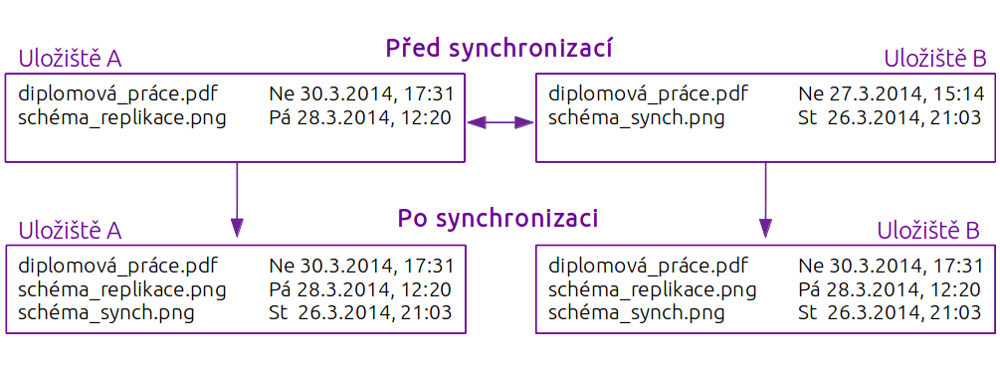
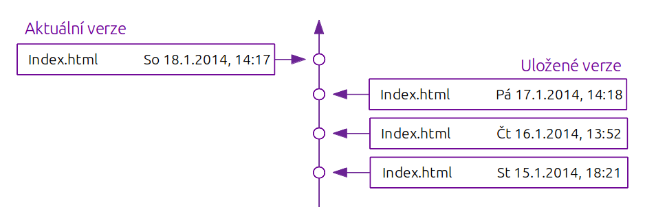
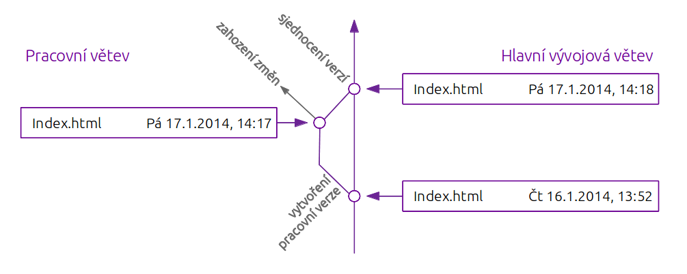

Pro lepší porozumění textu této práce je potřeba definovat pojmy replikace, synchronizace a verzování včetně popisu toho, jak jsou dané pojmy chápány v produktech ArcGIS. Výše zmíněné procesy jsou v literatuře často popisovány velmi odlišně. Některé zdroje pojmy replikace a synchronizace rozlišují, jiné je naopak považují za synonyma. Všechny zmíněné pojmy souvisí se zálohováním dat, tedy kopírovaním dat mezi dvěmi a více uložišti, a se liší konkrétním důvodem pro použití daného procesu.
O synchronizaci souborů či datových složek je možno mluvit v případě, že existují dva datové zdroje, které je potřeba v daný okamžik sjednotit. Jde tedy o proces, který probíhá jednorázově a to většinou z důvodů potřeby porování dvou a více datových uložišť, které je potřeba dostat do totožného stavu. To může například přispět snazší spolupráci více uživatelů nad stejnými daty nebo pomoct uživateli, který pracuje na více počítačích. Proces může proběhnout pouze jednou nebo opakovaně, ať už pravidelně či nepravidelně. U souborů se shodným názvem se porovnává čas posledního zápisu, velikost nebo obsah souboru, naopak soubory, u kterých není nalezena shoda, jsou jednoduše zkopírovány.
Replikace je proces průběžný, který soustavně hlídá, zda ve zdrojových datech nedošlo ke změně, a pokud ano, dané změny zkopíruje na jiné datové uložiště. Často je tento proces používán právě ve spojitosti s databázemi, kdy jsou data kopírována z důvodu snížení zátěže serveru, či zvýšení ochrany dat. Replikace je tedy často vyžadována z jiných důvodů než synchronizace, začíná s daty existujícími pouze na jednom uložišti a pro zajištění konzistence dat používá jiných technologií.
Oba procesy je možno použít jednostranně, tedy kopírovat data pouze z jednoho uložiště na druhé a nikoliv opačně, nebo oboustraně, kdy se data kopírují navzájem mezi sebou.
Specifickým způsobem zálohy dat je verzování, kdy se data na záložním datovém uložišti nepřepisují, ale systematicky ukládající v takzvaných verzích tak, aby se uživatel mohl kdykoliv snadno vrátit k předchozím stavům souborů. Smyslem verzování je zachovat všechny zvolené stavy práce, čímž se verzování liší od zálohování, kde stačí mít aktuální kopii daných dat. To, co je zde popsáno jako verzování, se v produktech ArcGIS nazývá archivování dat (Law, 2008).
Verzování může probíhat ručně, poloautomatizovaně či plně automatizovaně díky speciálním nástrojům pro správu verzí, kterých je na internetu dostupná celá řada. Oblíbeným verzovacím systémem programátorů je Git4 , open-source nástroj pro správu verzí, který pomáhá při práci s malými i velkými projekty a podporuje týmovou spolupráci. Umožňuje vrátit jednotlivé soubory nebo celý projekt do předchozího stavu, porovnat změny provedené v průběhu času, zjistit, kdo naposledy upravil něco, co nyní možná způsobuje problémy, kdo vložil jakou verzi a mnoho dalšího (Chacon, 2009). Git je vhodný zejména pro textové soubory, protože dokáže analyzovat části textu, či programového kódu a zvýraznit místa, která se změnila.
Samotná databáze přímo neposkytuje verzování dat. Nejsnazší způsob, jak získat verzi dat, je export databáze do souboru. Takový soubor je poté možno verzovat podobným způsobem jako jakýkoliv jiný soubor. Totéž platí i pokud jsou v databázi uložená geodata. Podobně jako pro textová data, byl pro prostorová data vytvořen verzovací systém GeoGIT, který vychází z již zmiňovaného systému Git. Umožňuje uživatelům uchovávat změny v souborech Shapefile, SpatialLite a z databáze PostGIS (PostgreSQL) a stejně tak jako Git se vrátit k kterékoli předchozí verzi nebo sledovat konkrétní změny, které v datech nastaly od posledního záznamu.
Verzování může být chápáno také jako vytvoření pracovní verze. V případě, že jdou data bezchybná, ale je potřeba je aktualizovat, testovat či jinak měnit, pak je vhodné vytvořit tzn. pracovní verzi, aby nedošlo k jejich poškození. Jedná se tedy o kopii aktuálního stavu, na které je možno pracovat a zkoušet. V případě, že práce nedopadne podle představ, je možno změny zahodit, pokud je tomu naopak, je možno pracovní verzi sjednotit s platnou verzí. Tento způsob verzování umožňuje Git i GeoGIT a takto chápe pojem verzování i společnost Esri. V případě databáze takto používáný způsob verzování navíc umožňuje více uživatelům editovat jednu databázi. V případě, že by si nevytvořili pracovaní verzi, ale pracovali přímo s daty uloženými v databázi, databázový systém by data zamknul a žádný jiný uživatel by je nemohl v daný okamžik editovat. Verzování v produktech ArcGIS zajišťuje technologie ArcSDE.
